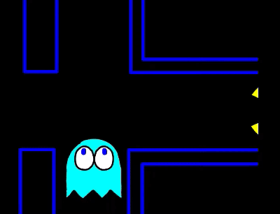

"INKY"
Привидение по имени Инки остается в домике на короткое время на первом уровне и не бросается в погоню, пока пакман не съест как минимум 30 точек. На английском его описывают как «застенчивый», «робкий» (bashful), на японском «kimagure» — капризный, причудливый. Поведение Инки сложно предсказать, потому что это единственный призрак, который использует в своей погоне не только положение пакмана. Инки использует положение и направление как пакмана, так и Блинки (красного привидения). Метод таргетинга Инки примерно таков: он выбирает клетку на две клетки перед пакманом (почти как Пинки), затем представьте себе вектор от Блинки до этой точки и удвойте его. Конец вектора и будет целевя клетка Инки.
 Таким образом цель Инки может быть где угодно, пока Блинки не близко с пакманом, но если Блинки удалось сблизиться, Инки сделает то же самое. Заметьте, что его вычисление «двух клеток перед пакманом» страдает ровно той же ошибкой переполнения, что и у Пинки, так что если пакман движется вверх, конец вектора из Блинки (до удвоения) будет на самом деле на две плитки слева от пакмана.